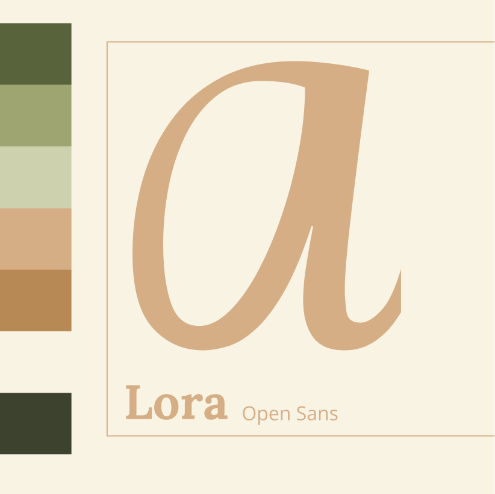
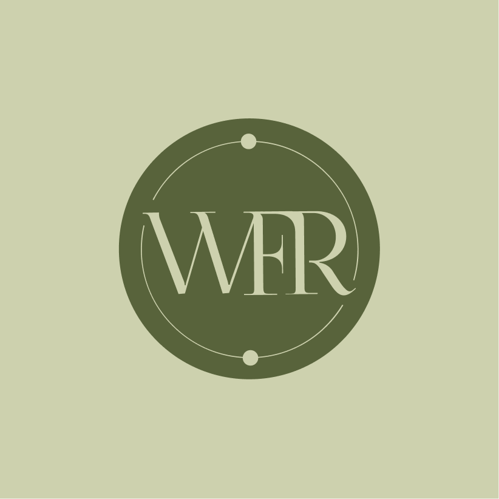

Waxflow Riga
Client is a certified waxing master seeking to grow her own waxing salon bussiness.
Client
Waxflow Riga
Role
Designer
Timeline
April-June 2026
Deliverables
Branding, Print, Social media templates
Challenge
Client had a weak understanding of how to position their business, what market niche to occupy. There was no business name. As new business, there where limiting budget options and a strong need to solve the right pain points to give a successful start to the business. No target audience segmentation.
Impact
Brand identity and assets based on research and client vision. Social media templates and posting strategies, as well as guidence on production and marketing.
Process & Strategy
Discovery
In-depth discussion about long-term and short-term goals. Pinpointing pain points, questions. Adjusting for future planned scale. Making a schedule for the development process.
Market research
Market research that in tandem with the owners vision would act as the basis of the whole brand presence and marketing strategy. We looked at global and local tendencies, looking at the latest developments in the waxing industry, including analysing search trends over time.

Market research via search result analysis
Competitor analysis
Competitor analysis was conducted by comparative analysis, looking at both social media accounts (posting schedules, content types, branding, language usage, etc.) and local competitors (location, findability, services). Findings also inluded distinctions between various types of competitors- studios, individual practitioners and clinics.

Competitor analysis
Client analysis
Client analysis targeted potential client segments through different persona charts and their respective customer journeys, pinpointing relevant touchpoints that could be used in marketing and service design. 5 persona charts exploring different client profiles (age, gender, pain points, most attractive services) and their user journeys.

User jouney research
Service design
Service design aimed to synthesize the above mentioned data with the business owners own preferences to maximize their reach. We discussed which channels to prioritize and how automate customer interactions and where it was needed. Online, for example, it was through the reservation system, linkedtree page (hubbing together all relavant links in one page). For the actual service, it was an initial printed questionnaire.

Touchpoint flowchart
Brand design and social media design, handoff
Brandbook and social media templates for Canva and Capcut. Training in Meta Bussiness Suite and it's usage. Multiple cheatsheets to help in content creation. Initial oversight over content creation.

Instagram grid buillding principle
Key insights
In a saturated market with a lot of competition and service alternatives, the waxing salons key differentiating factor should be clients perceived comfort.
Discoverability is the main concern- business should focus on SEO, particularly Google maps, alongside content creation on Instagram and Facebook.
Solutions
- Brand identity focusing on easing clients fears- professional, approachable, clean.
- Business name that would rank high in google search, social media tag groups that would help target local customers.
- Target new customers that haven’t used waxing service before and/or don’t have their service provider.
Branding
Context
Client searched to convey professionalism and approachability, aligning with the brand's values of trust and quality. In tandem with the branding strategy a logo and brand assets were designed.
Key design decisions
After synthesizing research and brainstorming, brand name "Waxflow Riga" was selected, incorporating three elements: "wax" for waxing, "flow" as a nod to the owners last name and "Riga" to help establish local presence and help with SEO.
We explored several moodboards, but the final brand identity focused on a modern aesthetic, clean lines and nods to flora conveying a sense of natural beauty and tranquility for the busy everyday woman.




Social media
Context
The goal was to allow the client to manage their online presence independently, providing professional templates, design elements and relevant training as well as the initial account setup and help in post creation. To ease the clients way into content creation the client was provided with supplementary materials like a story board template and post making cheat sheet.
Key design decisions
Canva based post templates for various post and story types were prepared. For video based editing multiple animated, including title cards and signoff was made for later editing in Capcut.


{kind=link}
{kind=link}
{kind=link}
{kind=link}
{kind=link}